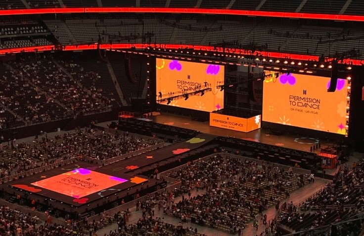
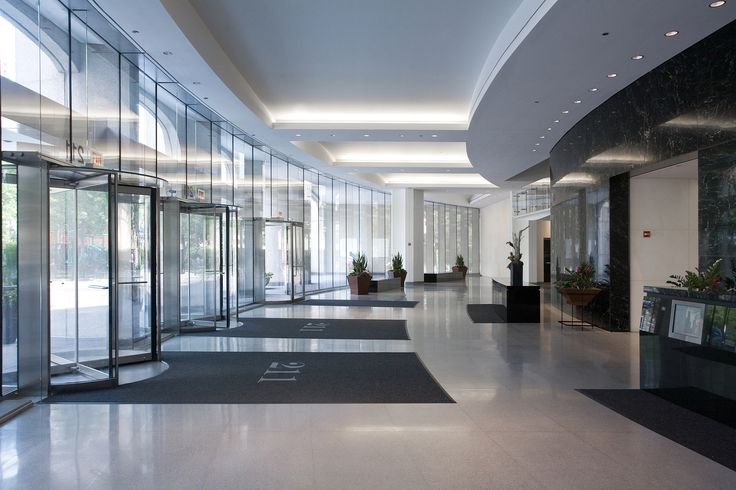
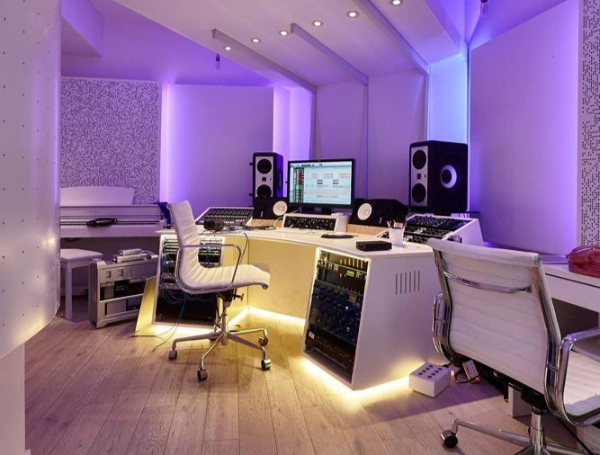

Consideramos que la música y los medios audiovisuales, son una forma muy especial de expresión. Nos enfocamos mucho en la piedra preciosa AMATISTA, en su tonalidad morada, representando la fortaleza que habita en cada persona así como su importancia y presencia en el mundo. Creemos fielmente en que la música forma parte día a día de dicha cualidad en nosotros los seres humanos, brindando un sin fín de emociones a los oyentes. AMATISTA ENTERTAINMENT surge a raíz de querer darle un nombre único a nuestra empresa y que además tenga un significado valioso pues para nosotros cada uno de ustedes así como nuestros artistas y personal, son muy importantes para nosotros.
Gracias infinitamente a todos los que confían en nosotros, y por permitir que nuestro arte ilumine sus vidas.

Próximos Conciertos
¡Descubre los conciertos que están cerca, revisa las fechas y conoce más detalles!
Click aquí

Conoce AM Ent.
Revisa los requisitos y consulta las fechas disponibles para agendar tu visita.
Calendario
